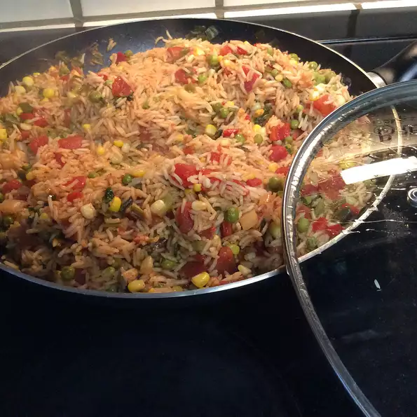

Triple Rice

Flavorful and delicious. No one will guess this authentic tasting rice was made from instant rice.
Ingredients
- 1 tablespoon vegetable oil
- ½ onion, chopped
- 1 ¼ cups uncooked instant rice
- 1 (14.5 ounce) can diced tomatoes
- ½ cup chopped fresh cilantro
- 1 cup chicken broth
Steps
- Heat the oil in a skillet over medium-high heat, and cook and stir the chopped onion until browned, about 8 minutes.
- Stir in the rice, tomatoes, cilantro, and chicken broth, and bring to a boil. Reduce the heat to medium-low, and simmer until the rice is cooked and most of the liquid is absorbed, about 10 minutes.
Back to Top
Back to Main Menu